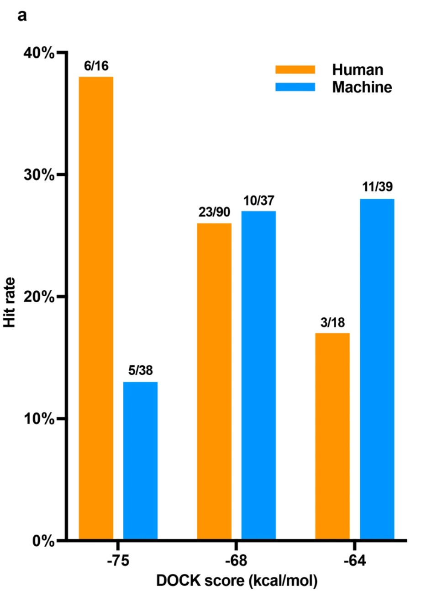
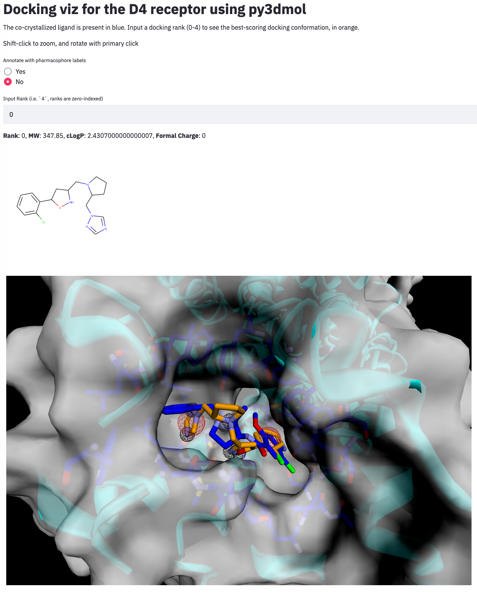

Docking curation using py3dmol and streamlit
Github repo
View the app
Docking has been used for discovery of new scaffolds for a while now, but is really becoming popular with the combination of ultra-large scale docking libraries and some high-profile examples (such as Lyu et al, or Patel et al).
While it would be nice to have a list of predictions that are generated completely by the docking algorithm, it pays to manually inspect the top-scoring docked poses and use your expert experience to prioritise the most likely hits. To see how this improves hit-rate, see Extended Data Fig. 7 from Lyu et al above. It looks like the very high-scoring ligands from UCSF DOCK somehow hack the scoring function, and get extra benefit from manual curation:

Typically, manual curation entails visualizing the docked pose, looking for strain in the ligand structure, overlap against an existing known (crystallized) ligand, or pharmacophoric interactions that look promising. This requires a bit of domain knowledge: chemical, medicinal chemical, structural biology, pharmacology, as well as the history of the target and the known drugs.
To that end, I coded up an applet to visualize a receptor, the crystallized ligand, and an example list of docking predictions. The docking predictions were 5 ligands from Lyu et al, docked against the D4 receptor (5WIU) using smina. It's mind-blowing to me how easily all the open-source compchem tools work together: streamlit to make a jazzy browser app, py3dmol to visualize the receptor, ligands, and pharmacophores, and rdkit to handle the ligand molecules and calculate pharmacophores. Even the docking itself could be done inside a streamlit app by calling smina.
It really seems like a golden age for compchem! I didn't write the tools, only sewed them together, so I can't take credit for it - but this applet took a weekend to write and IMO could easily recapitulate the function of any professional compchem visualization software. This could be further extended to calculate interaction energies using OpenMM.
If you want to use this tool in your own research and need a particular feature, reach out and I'd be happy to help customize it.
